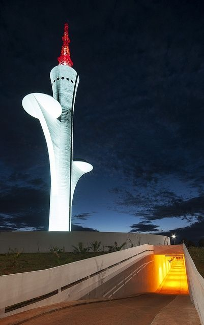
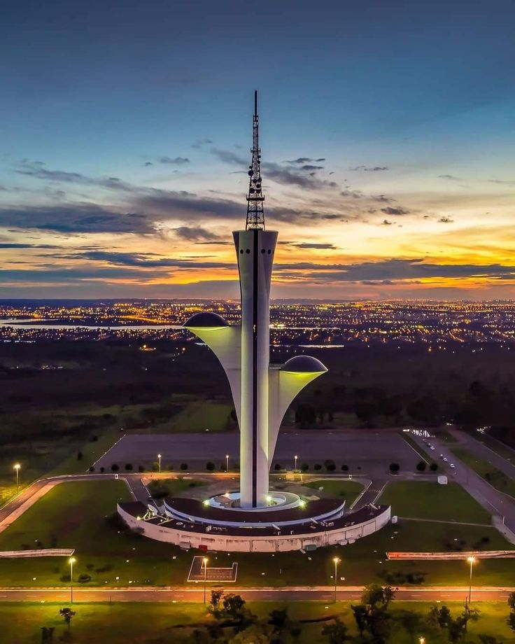
 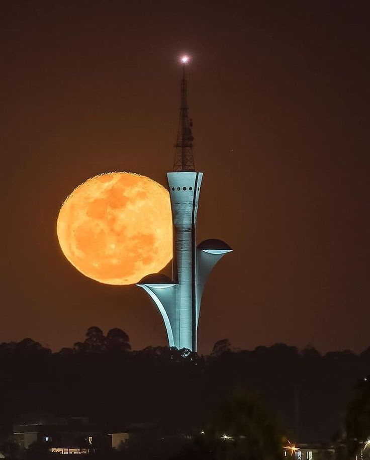
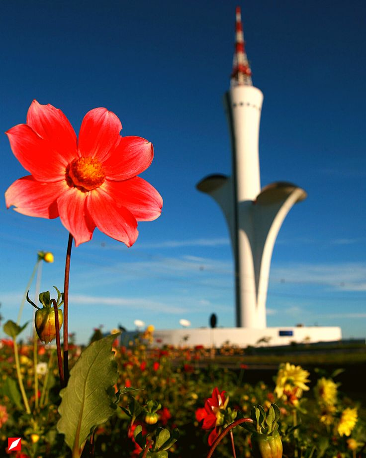
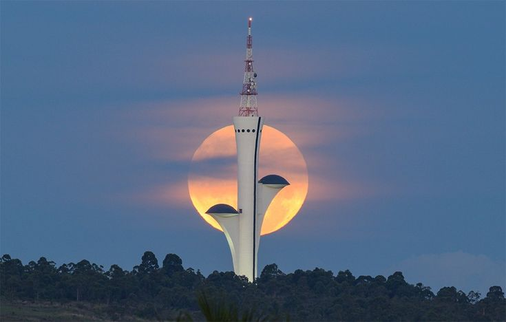
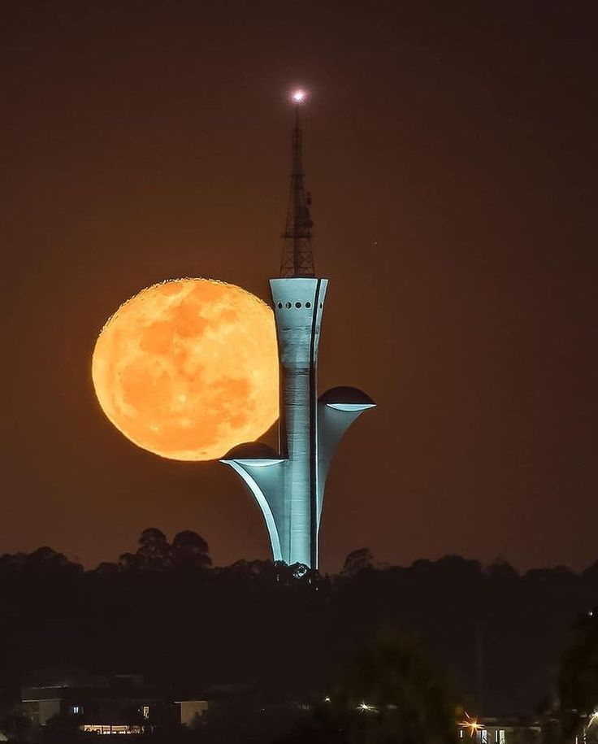
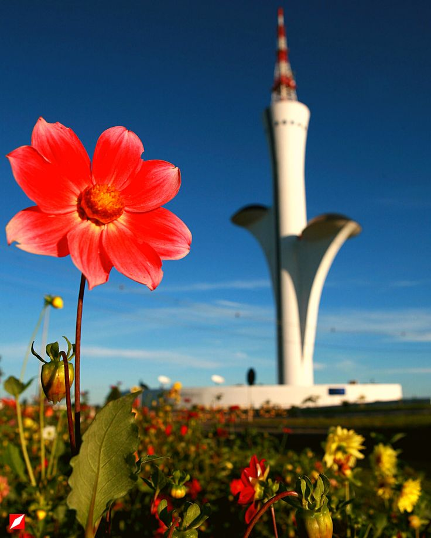
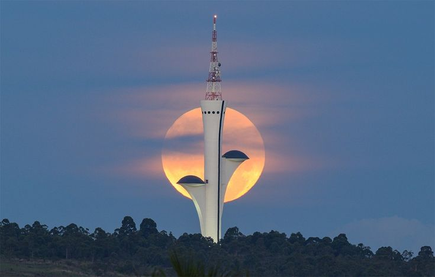
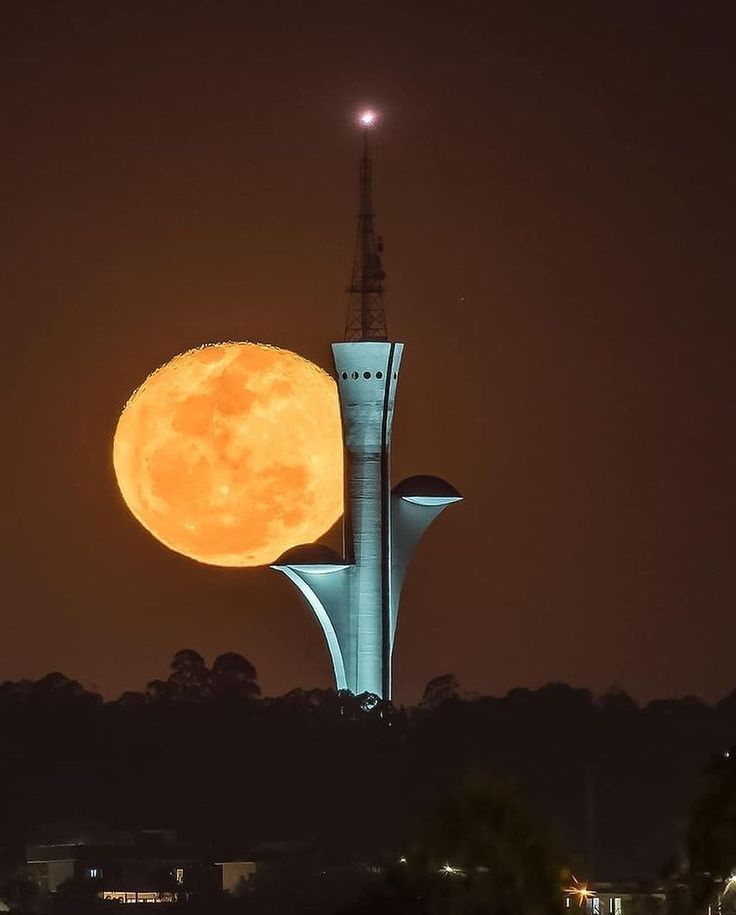
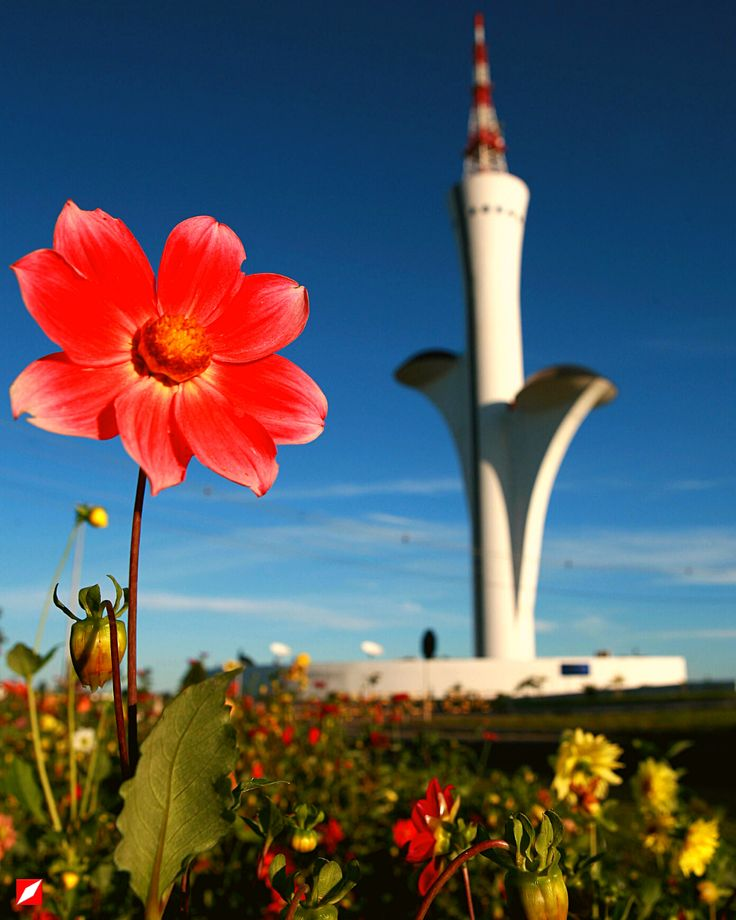
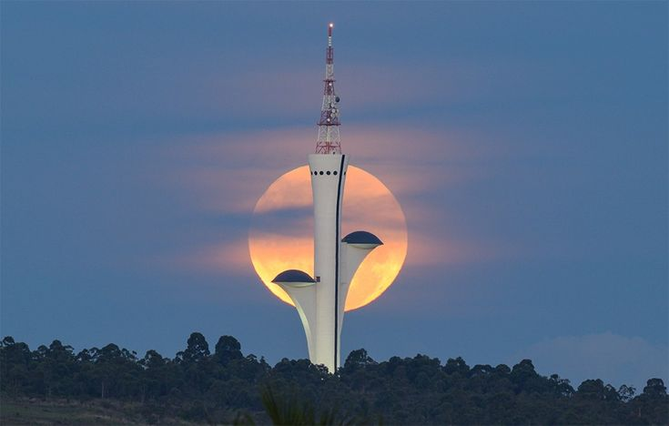
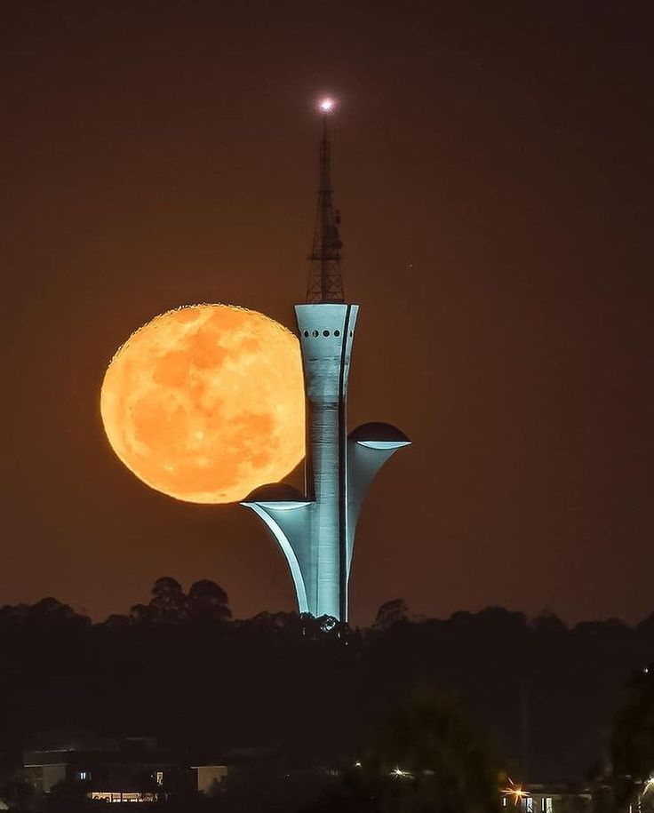
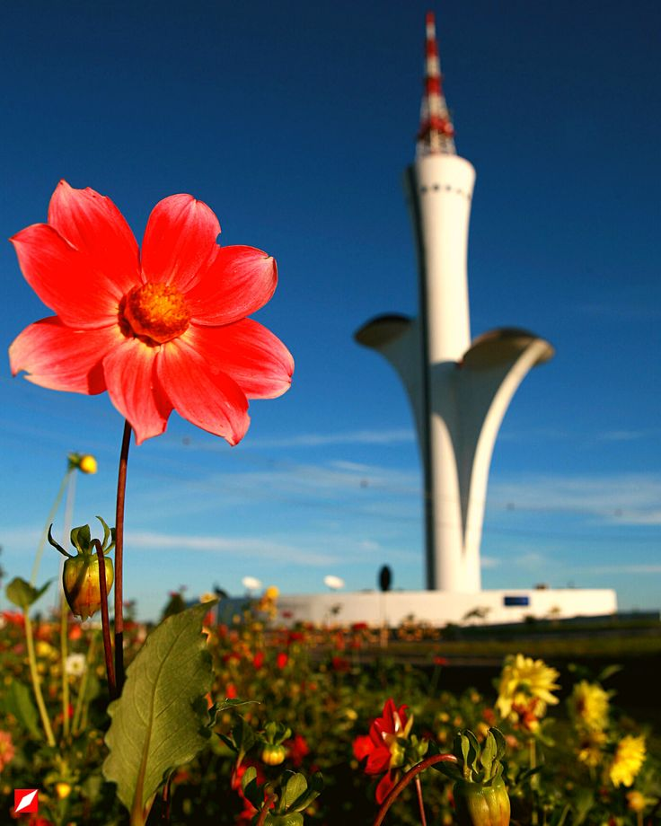
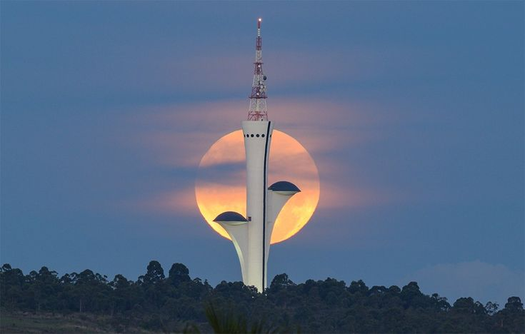
A Torre Digital de Brasília é um dos marcos da modernidade na cidade. Com 145 metros de altura, ela foi construída para ser um ponto de transmissão e telecomunicações, além de oferecer uma vista panorâmica incomparável da capital federal.
A torre se destaca pela sua arquitetura imponente e é considerada um dos maiores símbolos do desenvolvimento tecnológico de Brasília. Os visitantes podem aproveitar a vista, apreciar a arquitetura moderna e ainda explorar os espaços ao redor da torre.